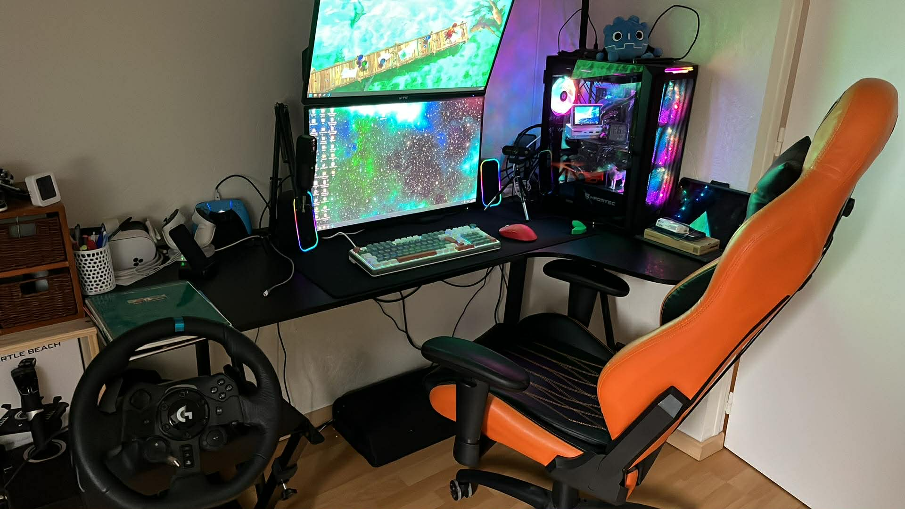
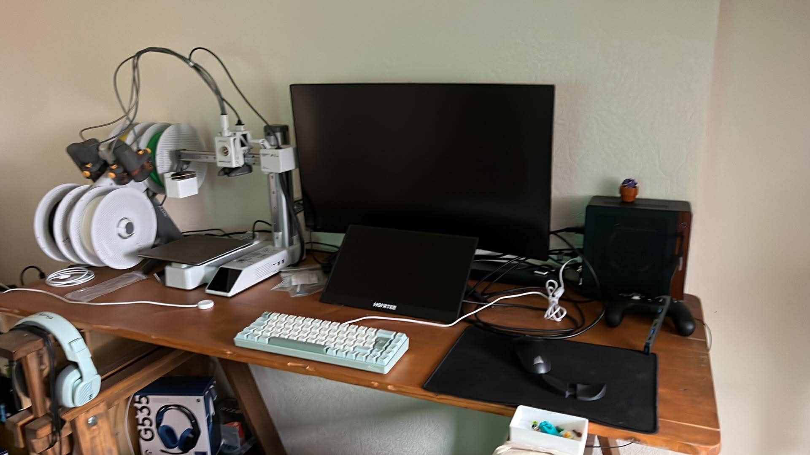
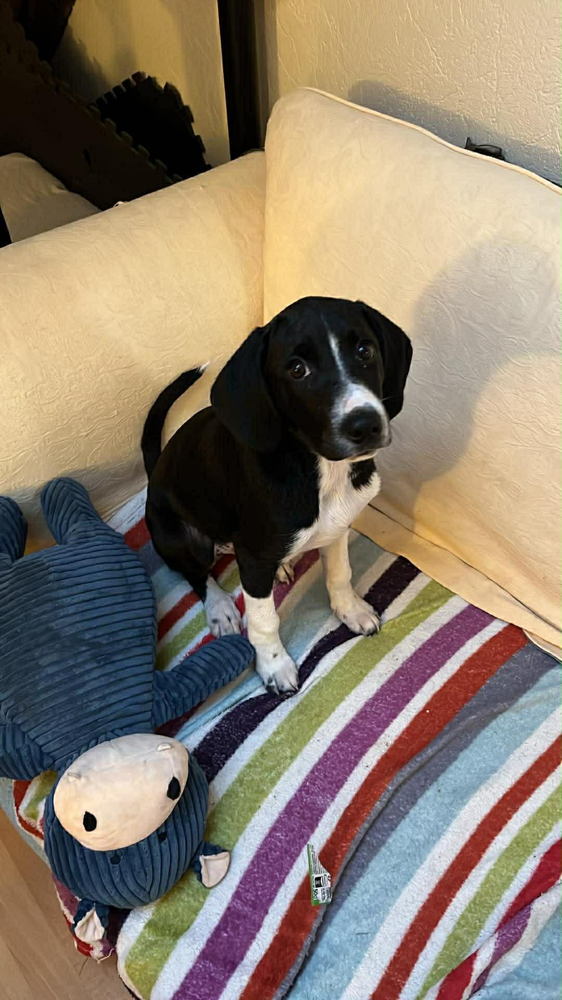
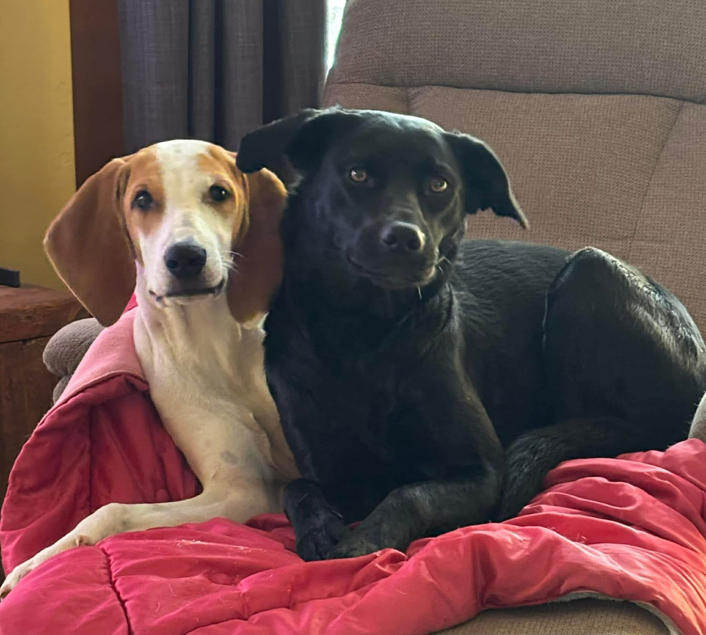

À propos
Qui suis-je ?
Je suis Arnaud GUYMONT, développeur spécialisé en jeux viéo, diplomé d'un titre RNCP de niveau 6 de l'école Creajeux en 2022. Comme beaucoup de développeurs JV, je suis moi-même un joueur depuis aussi longtemps que je me souvienne. J'ai grandi avec la Gameboy, Nintendo 64, Playstation... Je me suis toujours demandé comment est-ce qu'on créé un jeu vidéo. Je pensais que des génies à lunettes ou des magiciens codait chaque pixel de l'écran avec des 0 et des 1. Bien que je ne porte pas de lunettes ni ne pratique de magie, aujourd'hui je suis fier de pouvoir être l'un d'entre eux.
Avec plus de 3 ans d'expériences professionnelles, principalement dans le serious game et la réalité virtuelle, je vise toujours à créer des expériences uniques et satisfaisantes pour les joueurs. Que cette expérience soit à but ludique ou bien pédagogique, mon objectif est de faire en sorte qu'elle soit intuitive et mémorable. Je cherche toujours à élargir mon panel de compétences, si un challenge se présente, c'est avec plaisir que je le prend en main. Il est important pour moi de ne pas rester dans une zone de confort.
Gameplay, systèmes, UI, tools, documentation et même team lead. Je peux porter plusieurs casquettes.
Naviguez sur ce site pour en savoir plus sur mes compétences, mes expériences et mes ambitions professionnelles.
Formations
-
2018 - 2022
Creajeux: Certificat professionnel RNCP niveau 6 (niveau bac + 3/4) programmation jeux vidéo
En 2018 j'ai rejoint l'école Creajeux à Nîmes. Durant ma première année, nous avons vu les fondamentaux du jeux vidéo et fait nos premiers jeux en Lua avec le framework LÖVE2D, qui plus tard servira à faire Balatro!
Ma seconde année a été dédiée au C. Nous apprenions le langage, les pointeurs, et différents types de structures de données et des algorithmes que nous appliquions ensuite dans nos projets avec la librairie CSFML.
En troisième année, nous avons fortement élargi nos environs avec notre premier moteur de jeux: Unity. Avec ça nous devions forcément apprendre le C#. Nous avions eu d'autres cours sur le C++ où nous fabriquions notre petit moteur de jeu avec la SFML en faisant un petit Warcraft (rendu, animation de sprite, pathfinding d'entités...). Nous avions aussi vu quelques nouveautés comme la programmation tools pour de l'audio, et du python pour scripter Blender.
Pour finir, la quatrième et dernière année s'est focalisée sur Unreal Engine. Les cours étant principalement basés sur le Blueprint, j'ai toujours tenté le C++ quand je pouvais. Nous avions reçu quelques cours sur de la programmation réseau mais cette année là était surtout la préparation à l'entrée dans le secteur professionnel. Beaucoup de temps passé à travailler les CV, lettres de motivation, comment et où trouver un stage, etc...
Rendez-vous sur cette page pour voir mes projets étudiants.
-
2017
DUT informatique
J'ai fait un rapide passage à un IUT pour obtenir un diplôme d'informatique. Après un semestre calamiteux, je ne me sentais pas à ma place. Les cours en amphi étaient barbant, et les tp non-guidés. Je trouvais que tout ceci n'avais pas sens. Je voulais toujours faire de l'informatique, mais pas comme ça. Je suis parti durant le second semestre à la recherche d'une formation plus concrète.
-
2016
Baccalauréat Scientifique Option Informatique et Sciences Numérique (ISN) mention assez bien
C'est au lycée que j'ai écrit mes premières lignes de code. J'ignorais que l'option ISN existait et par curiosité j'ai pris celle-ci plutôt que physique-chimie, math ou svt. Sans ce choix ma vie aurait sûrement pris une toute autre direction.
-
2015
Brevet élémentaire de Fusilier-Marin de la Marine Nationale
Après ma Préparation Militaire Marine, je suis allé faire 2 semaines de FMIR (Formation Militaire Initiale du Reserviste) à Lorient pour intégrer la Réserve des Fusilier-Marins. J'ai été affecté au Bataillon de Fusilier-Marin Detroyat, qui se situe à l'Arsenal de Toulon. J'y assurais la protection-défense armée des sites militaires telles que les bases navales, aéronavale, dépots de munitions, pyrotechnies, et même le porte-avions Charles de Gaulle. Mon passage à l'armée a beaucoup forgé mon caractère et mon approche au travail d'équipe. La cohésion est la clé. J'ai quitté la Marine en 2024, il était trop compliqué de concilier la vie professionnelle avec la réserve. J'étais au grade de Second-Maître.
-
2015
Préparation Militaire Marine
Lorsque des officiers de la Marine Nationale ont visité mon lycée, j'ai accepté d'intégrer la PMM car j'ai toujours été intéressé par l'armée. Ce premier pas dans la Marine m'a permis de voir l'univers de l'intérieur. Ça se passait un samedi sur deux et on nous apprenait ce qu'était la Marine et l'armée en général, les différents métiers et leur quotidien. Nous sommes allés 1 semaine à l'Arsenal de Toulon pour rencontrer des militaires et faire des activités, comme des opérations de sauvetage et du tir au Famas. On nous a même proposer de passer le permis bateau (sans frais) ce que j'ai fait et réussi.
Ambitions
Même pas encore diplômé, j'avais déjà l'idée de créer mon propre studio de développement. Mais est-ce réaliste qu'un jeune sortant d'école se lance dans un secteur aussi compétitif que le jeux vidéo sans expérience ? Je me suis dis qu'il est plus prudent de prendre de l'expérience, rencontrer et se connecter avec d'autres développeurs. Pouvoir voir de l'intérieur comment les projets sont construits et organisés dans différentes entreprises serait le meilleur moyen pour moi d'apprendre et évidement, dans le même temps, faire des projets intéressants.
Sur le court à moyen-court terme (~5 ans), mon ambition est toujours de prendre de l'expérience, renforcer mon expertise, et grimper l'échelle hiérarchique. J'ai déjà occupé un rôle de lead, d'abord en école, qui s'est très bien passé, puis un en milieu pro où j'ai rencontré plus de difficultés mais je préfère voir le verre à moitié plein: ça m'a permis de beaucoup apprendre sur le management d'équipe et j'en ressors renforcé et j'aimerais réitérer l'expérience.
Sur le plus long terme, je me vois dans un rôle à responsabilité, que ce soit senior lead programmer, directeur technique, producer, chef de projet, voir même avec mon propre studio.
Je pense être une personne qui prend du recul et aime avoir une vision globale sur les projets sur lequel elle travaille. Je cherche à être inspirant auprès de mes pairs et à motiver par l'exemple, l'encouragement positif et la mise en valeur des membres de l'équipe.
Mes centres d'intérêts
Une rubrique plus personnel pour découvrir qui je suis.Les jeux vidéo
surpriseÉvidement, difficile d'être développeur de jeux sans un être un joueur soi-même. Les jeux qui m'ont fait grandir commencent bien sûr par Pokémon et Mario mais c'est de Ratchet & Clank dont je garde les meilleurs souvenirs. J'ai eu ma phase Call of Duty à l'adolescence, puis, depuis que je suis passé de la Playstation au PC et que je suis développeur, j'ai fortement élargi mon panel d'intérêt à d'autres genres que les FPS, action, combat shooter... (même s'ils restent mes favoris). J'adore tester les démos des jeux pendant les Next Fest. Ça me prend parfois des semaines de toutes les faire. En 2025, j'ai lancés 278 démos d'après ma retrospective Steam. Faites un tour sur mon profil Steam.
Informatique
Depuis que j'ai monté mon premier PC début 2024, j'en ai monté une bonne dizaine, reconditionné
d'autres, certains que j'ai revendu, d'autres pour moi ou pour ma famille.  
J'ai 2 PC, mon
principal est composé d'un Ryzen 7 7800X3D sur une Asus ROG Strix B650E-F Gaming Wifi avec un XFX Qick
RX 7800XT, 32 Go de RAM cadencé à 6400 MT/S et 4 To répartis entre 3 SSD NVMe.
Mon second PC que j'utilise lorsque je me déplace (en vacances par exemple) est un mini pc monté dans un
Jonsbo NV10 équipé d'un
Ryzen 5 8400F, 32 Go de RAM cadencé à 5600 MT/S et une RTX 4060 low profile.
J'ai vendu 3 PC petits budgets (200 - 300€) avec des composants de récupération, et un de moyenne gamme
(600€) avec des composants d'occasion et Aliexpress.
J'ai monté 3 PC de bureau pour le travail de mon père et un PC gaming pour mon frère (Ryzen 7 5700X, RTX
3050, 32Go RAM).
J'ai aussi testé quelques distro Linux tels
que Linux Mint, Steam
OS, Bazzite, AntiX pour un vieux Asus eee PC qui
était encore sous Windows XP, Tiny10 (un debloat de Windows 10). J'ai également un Steam Deck (j'ai
hate de la nouvelle Steam Controller et du Steam Frame aussi, curieux de la Steam Machine) et je me suis
récemment mis à l'impression 3D avec un Bambu Lab
A1 mini.
Fitness
Je crois que depuis que je sais marcher, je pratique du sport. D'abord du football jusqu'à mes 14 ans, j'ai pratiqué du tennis, basketball, planche à voile, boxe et ski (snowboard dernièrement). Je pratique depuis bientôt 8 ans de la musculation en salle ou à la maison.
Les Chiens
J'ai toujours eu des chiens à la maison. Aujourd'hui, depuis peu, j'ai adopté Boris, né fin 2025 d'une
maman croisée Labrador et Border Collie et d'un papa chien de
porcelaine.  
Cinéma
Bien qu'un petit peu cliché, ayant grandi dans les alentours de Cannes et ayant même participé au festival, j'aime le cinéma. Je reste féru de films d'action, facile à regarder et plein de rebondissements. Mes franchises préférés sont Mission Impossible, Dune, Marvel (jusqu'à End Game), John Wick.
Je ne suis pas très série, néanmoins une que je peux recommander à n'importe qui c'est Banshee, 4 saisons d'un cambrioleur qui après avoir purgé sa peine lors d'un casse raté, retrouve sa complice dans le comté de Banshee où il veut récupérer sa part du dernier butin. Pour passer inaperçu, il prend l'identité du nouveau shérif, tué devant ses yeux. Avec Anthony Staar, qui joue maintenant le rôle d'Homelander dans la série The Boys.